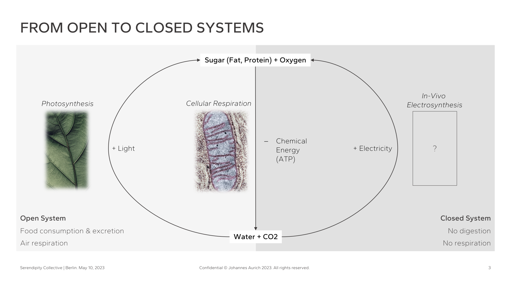
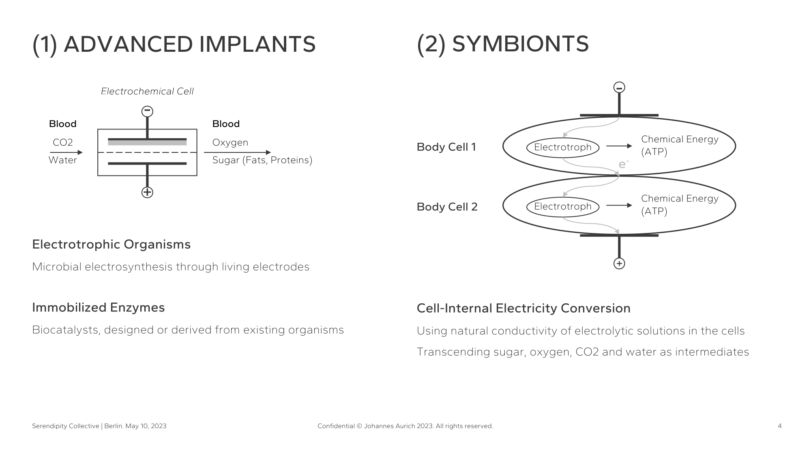
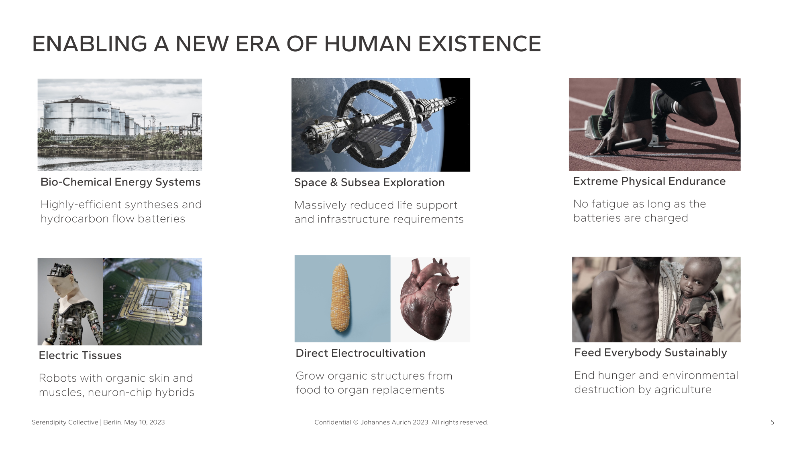

I had the honor to be selected as one of only eight Idea Owners for the very first 2023 Serendipity Collective↗, a radical innovation contest sponsored by the U.S. Office of Naval Research Global (ONR Global↗) and the German Federal Agency for Disruptive Innovation (SPRIN-D↗). This is the first and in-progress write-up of what I worked on; this post may be extended in the future.
One must have chaos within to birth a dancing star
The motto of the contest was: "give us mind-bending ideas that are 99% science fiction and 1% reality, that would change the world fundamentally if they worked, and describe how you'd realize them". You were asked to apply with a team comprising natural/engineering scientists that could implement the idea, social scientists that could question the implications for humanity, and an artist who ensures beauty and creativity in everything realized.
I applied 12 hours before the deadline with the most batshit crazy ideas I could come up with...and got invited. No team, no big credentials, just an engineer and scifi lover amongst highly skilled domain experts from all over the world. I'm still increadibly thankful to the judges for this unique chance to pitch for $50k research funding AND their help building a team within the short time before the pitching session. So what in the world did I propose?
From CO2 and water to nutrients and oxygen - in vivo
The original idea was called "Human bodys running on electricity", and you can still find my clunky summary right at the bottom of the 2023 shortlist↗. It basically says: use implants or symbionts to give the human body the ability to do what photosynthesis does in plants, but with electricity instead of light. Get rid of almost all agriculture and slash nutrition costs by living off power from solar panels. I will add a much more extensive and detailed descrition of my thinking and approach with another iteration of this post. For now, I'll leave you with key slides of the idea pitchdeck I developed.


Obviously, this idea has many challenges and enourmous hurdles, but probably less than you'd think. At least for the implants pathway, the science is understood and basic technological building blocks proven on scale. Scientists already work on fuel cells running on blood glucose and oxygen to electrically power pacemakers, so we'd just have to find a way to turn this operation around.
Going far beyond humans
The initial idea of hacking the human body developed much further very quickly to cover the general electrification of biology and related applications; fortunately, because I had to conclude at one point that hacking human bodies at the level required for this vision is probably not worth the squeeze (also a discussion for a future iteration of this post).

If you dive deeper into the cellular mechanisms of metabolism you will find that most living organisms are very similar, no matter if human, animal, microbial, or plant cell. One of the most interesting applications is ligh-free agriculture where you cultivate photosynthetic organisms with chemical energy carriers like glucose or acetate to make them grow in the dark. It is a marvel of modern science and could, one day, revolutionize indoor farming.
I had the chance to speak with visionary scientist in this field and may publish another more in-depth post about my thoughts on "dark photosynthesis" and fruit cell culture. Until this is ready, I recommend taking a look at a few articles and following leading researchers and labs in this field: